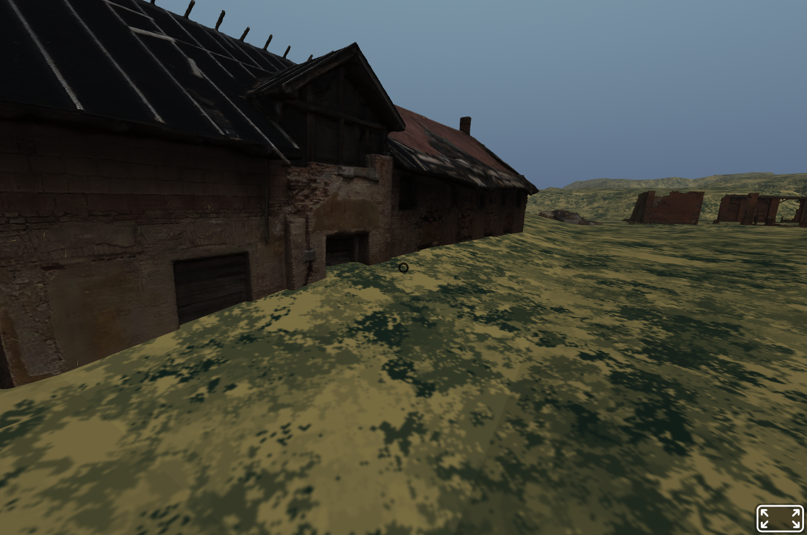

In Fall 2026, UTampa graduate students in SEM 601 Digital Storytelling created rapid prototypes of WebXR experiences. These six student teams were new to WebXR when they began these class exercises. Teams began with a simple A-Frame template document. Some teams included .glb models arranged in Adobe Substance Stager and most relied on some AI coding assistance. Here are the prototype interactions the teams developped.